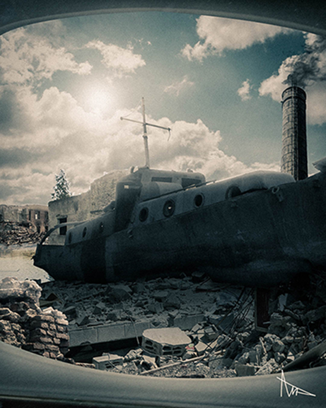

Portofolio
By M. Ahya Ghifari
Web
Deluxe
Deluxe adalah project pribadi e-commerce tentang toko roti.
Static menggunakan HTML, SCSS, dan JQuery. Dinamis menggunakan Django
SAFE
SAFE adalah project sendiri tentang cafe modern dan minimalis.
Static menggunakan HTML, SCSS, dan JQuery. Backend menggunakan Django
Burkrez
Burkrez adalah project sendiri tentang berbagai macam burger.
Pembuatan menggunakan ReactJS
Photoshop
Manipulation
(PM)
2 Agustus 2022
PM ini terinspirasi dari nama album Rammstein yang terakhir yaitu Zeit / waktu.

10 Agustus 2022
PM ini terinspirasi dari bentuk kapal dalam cover album Rammstein Rosenrot

22 Oktober 2022
PM ini merupakan PM pertama yang mempunyai mood sangat cerah dari yang sebelumnya
28 April 2023
PM ini merupakan PM terbaru setelah lama tidak melakukan manipulasi